ApplicationMaster: coordinating one YARN application attempt
Component index · Submission client · Executor allocator
The Spark ApplicationMaster (AM) represents one attempt of a YARN application. In the managed case, a NodeManager starts its JVM from the launch instructions supplied by the submission client. The AM registers with the ResourceManager (RM), connects the Spark driver to its allocator, and decides what outcome to report. It is not the RM, and it does not schedule Spark tasks. In cluster mode it shares a JVM with the JVM driver; in client mode it connects to that driver.
Flow at a glance
- ApplicationMaster: Starts PythonRunner on a driver thread in cluster mode.
- Driver scheduler: Passes the SparkContext to the waiting AM.
- ApplicationMaster: Registers with the ResourceManager and creates the executor allocator.
Key distinction: In client mode the AM connects to an existing driver. It never starts the Python script.
Show the animated flow

Trace startup: how does the AM find the driver?
- Read attempt inputs.
ApplicationMaster.main reads the localized Spark properties and constructs YarnConfiguration. The managed container's CONTAINER_ID identifies the ApplicationAttemptId. ApplicationMasterArguments carries the user class, script and arguments, or the external driver address, plus the cache-manifest path. A non-null args.userClass selects the cluster path. The client-mode process is named ExecutorLauncher, but its main delegates to the same AM implementation. Attempt identity and mode · bootstrap · launcher alias
- Cluster path: wait for a real JVM context.
runDriver() starts a thread named Driver. For orders.py it invokes PythonRunner.main with the localized script, an empty Python-files argument (the client built PYTHONPATH), and the user's arguments. PythonRunner starts the Python driver in the same container. When Python initializes the JVM SparkContext, YarnClusterScheduler.postStartHook publishes it through sparkContextPromise. The thread in that hook waits; the AM takes the configured driver host and actual port from the context, registers the AM with the RM, obtains the driver's YarnScheduler endpoint, and creates the allocator before resuming initialization. runDriver then joins the user thread. User entry point · scheduler hook · rendezvous · cluster startup and timeout
- Client path, instead:
runExecutorLauncher() creates its own client-mode RpcEnv, registers the AM's host and port -1 with the RM (this AM does not listen for inbound connections), then reads host:port from args.userArgs(0) to contact the already-listening driver. It retrieves the driver's current delegation tokens when creating the allocator. The AM joins the reporter thread; it never invokes orders.py. Client startup · driver lookup and allocator setup
- Common path.
YarnRMClient.createAllocator requires successful AM registration. The AM reconstructs the executor LocalResource manifest, derives a different endpoint for executor registration (CoarseGrainedScheduler at the driver's address), and installs YarnAM after the allocator exists. It calls allocateResources() once, then starts the Reporter thread. The endpoint's onStart sends RegisterClusterManager(self) to the Spark driver. This advertises the AM, not an executor. RM registration and guard · allocator ordering · AM endpoint
Messages and owned state
| Counterparty |
Exchange and effect |
| RM |
registerApplicationMaster(host, port, trackingUrl) registers this attempt. The reporter then drives allocator polls, which double as AM heartbeats. With pending allocations or loss-reason requests, the polling delay starts short and grows toward the steady heartbeat interval. This is not the executor-to-driver heartbeat. Registration · reporter loop |
Driver's YarnScheduler endpoint |
RequestExecutors carries totals per resource profile, locality counts, and excluded nodes; KillExecutors carries specific executor IDs. YarnAM forwards them to the allocator. A true request reply means the AM handled the request, not that YARN granted capacity. GetExecutorLossReason can be answered later from a container completion. Message handlers |
| User thread / driver / shutdown hook |
The AM owns sparkContextPromise, allocator, reporterThread and the attempt fields registered, finished, unregistered, exitCode, finalStatus, finalMsg. finish records the first local outcome and can interrupt other AM threads; it does not itself unregister with the RM. Fields · finish and unregister guards |
What outcome does the RM actually see?
| Event |
Local decision and external consequence |
orders.py returns normally after registration, or exits nonzero |
The cluster-mode user thread calls finish(SUCCEEDED, 0) on normal return. A SparkUserAppException carries Python's exit code into finish(FAILED, code, ...). If the cluster-mode AM never registered, finish records FAILED / EXIT_SC_NOT_INITED (13) instead, even if the script returned normally. User outcomes · local outcome rule |
| Client-mode driver disconnects |
Shutdown(code) records an orderly shutdown and marks the allocator as shutting down. On disconnect the managed AM reports success for a zero code and failure for nonzero. Without that handshake it can still report SUCCEEDED by default; spark.yarn.am.clientModeTreatDisconnectAsFailed=true makes the unexpected disconnect a failure. None proves the last output was committed. Disconnect decision · configuration default |
| AM JVM exits |
The managed shutdown hook runs after the Spark context hook. On a non-last success it unregisters before cleaning staging; on a non-last failure it skips both, leaving the RM the option to retry. On the last attempt it tries cleanup and then unregisters if registered. A hard crash need not run the hook at all. The maximum attempt count is bounded by YARN; retry is not promised. A new cluster-mode attempt starts the driver script from its entry point, not its last Python statement. A client-mode AM restart cannot resurrect an external driver. Hook branches · attempt cap |
Diagnostic boundary: Waiting for spark context initialization followed by a timeout means the cluster AM never reached its first allocator poll; inspect earlier AM/Python output before investigating executor capacity. A reporter exit because executor failures exceeded the limit or all nodes were excluded is a later failure. Correlate the ApplicationAttemptId and Final app status in the AM log with the RM's application-level final report; after a retry these may describe different outcomes. With YARN log aggregation enabled, yarn logs -applicationId <app-id> retrieves container logs. Context timeout · reporter failure paths · log retrieval